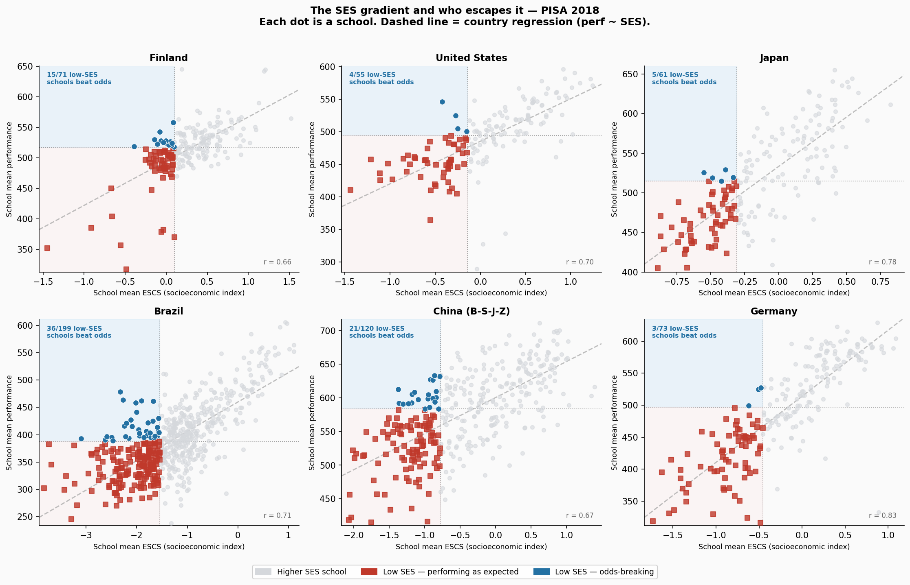
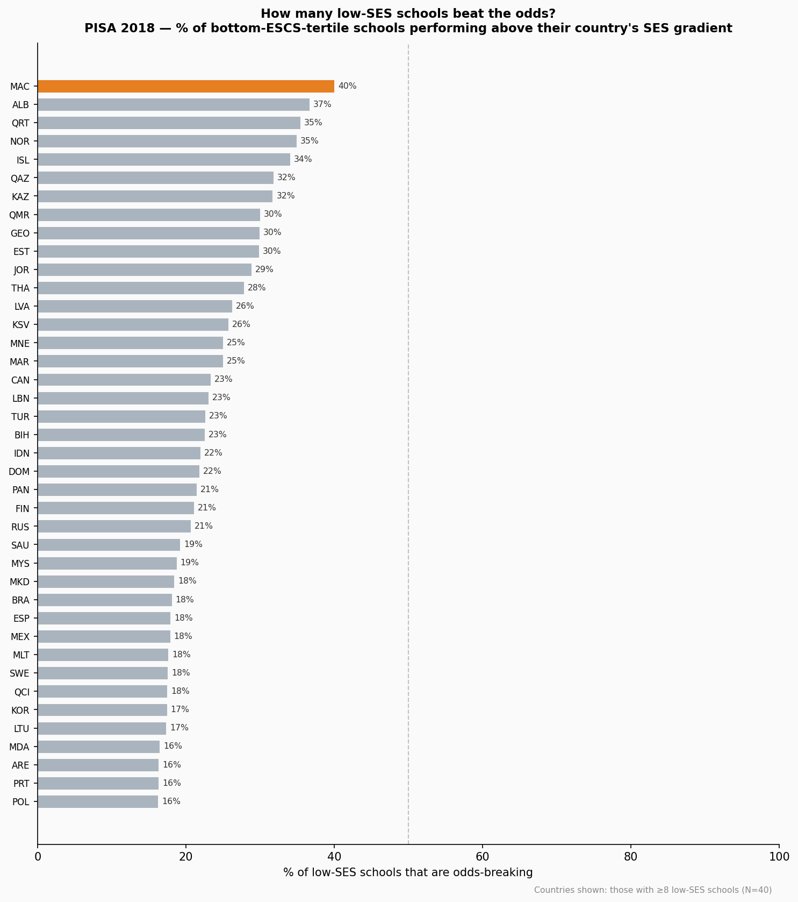
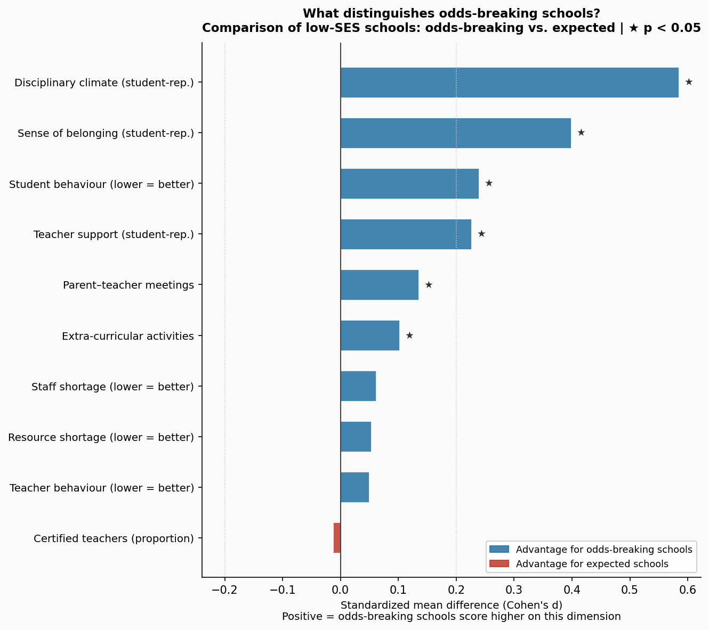

Across 79 countries, which school a 15-year-old attends is strongly predicted by how wealthy their family is. But 1 in 6 disadvantaged schools still achieves above the national average — and the gap isn't explained by resources.
Aggregate 21,684 schools from 79 countries. Plot each school's average socioeconomic status against its students' average academic performance. The pattern is the same everywhere: wealthier schools outperform poorer ones. The median within-country correlation between school SES and school performance is r = 0.71.
No country escapes the gradient. Even in the most equitable systems, school SES and school performance are positively correlated. But the strength of that relationship varies — and in the gap between countries lies the first part of the story.
Among the bottom third of schools by average student socioeconomic status, most perform below their country's median. That is what the gradient predicts. But not all of them do.
An "odds-breaking" school is defined here as one in the bottom ESCS tertile for its country that still achieves above the country's median school performance. If SES had no predictive power, half of all low-SES schools would qualify. With a median correlation of 0.71, only 16.9% manage it — 1,220 schools across the 79 countries studied.

Each dot is a school. Dotted lines mark the low-SES threshold (vertical) and national median performance (horizontal). Blue dots are odds-breaking schools. Dashed line = country OLS regression for context.
The scatter reveals the mechanics. In Finland, a sizable cluster of low-SES schools sits in the upper-left quadrant — below-median SES, above-median performance. In Germany, that quadrant is nearly empty. In Brazil, a few schools break through despite some of the steepest SES gradients in the sample.
The proportion of low-SES schools that beat the odds varies from 40% to 0% across countries — a range too wide to be explained by chance.

Countries with fewer than 8 low-SES schools are excluded. Sorted by prevalence.
Most odds-breaking
| Country | % |
|---|---|
| MAC | 40% |
| ALB | 37% |
| NOR | 35% |
| ISL | 34% |
| EST | 30% |
| KAZ | 32% |
Fewest odds-breaking
| Country | % |
|---|---|
| NLD | 0% |
| LUX | 0% |
| FRA | 4% |
| HUN | 4% |
| DEU | 4% |
| ARG | 5% |
The countries at the bottom of the list — Netherlands, Luxembourg, Germany, France, Hungary — share a structural feature: highly tracked school systems that sort students into academic and vocational tracks at age 12–14. In these systems, "low-SES schools" in the PISA sample are predominantly vocational schools designed to serve lower-performing students. Their position below the median is built into the system's architecture, not a school-level failure. No single school, however effective, can overcome a structural sorting mechanism. Estonia, Norway and Iceland, which operate less-tracked systems with comprehensive schooling through 15, show much higher rates.
The 1,220 odds-breaking schools look different from their low-SES peers in several ways. But not in the ways most people might expect.

Positive values = odds-breaking schools score higher. Cohen's d reported. ★ = statistically significant (p < 0.05). Characteristics grouped by type.
Six characteristics significantly distinguish odds-breaking schools. All six are measures of school climate and engagement. None of the resource and staffing variables reaches significance.
Disciplinary climate shows the largest difference (d = +0.58). Students in odds-breaking schools report more orderly, structured classrooms. Sense of belonging follows (d = +0.40): students feel more connected to their school. Teacher support (d = +0.23) and reduced student behaviour problems (d = +0.24) complete the climate picture. Parent–teacher meeting participation is 4 percentage points higher in odds-breaking schools; they also offer more extra-curricular activities.
Meanwhile: staff shortages are no different. Educational resource shortages are no different. The proportion of certified teachers is statistically identical — a Cohen's d of −0.01, essentially zero.
This analysis cannot establish causation. Odds-breaking schools score higher on climate variables — but more engaged families may self-select into better-run schools, or effective leadership may attract both better school climate and better student outcomes through a shared root cause. The data describes the pattern; it does not identify the mechanism.
It also does not suggest that resources are unimportant. The schools being compared are all low-SES schools; they all face resource constraints. The comparison shows that within the range of resource variation typical among disadvantaged schools, climate differences are more predictive than resource differences. This is not evidence that well-funded schools should become poorly resourced.
What the data can say, narrowly but clearly: there are schools in every country that serve disadvantaged students and achieve above-average results. They exist at rates from 0% to 40% depending on the country's school system design. And where they exist, the most consistent common thread is not what they have — it is how they run.
School performance: Weighted country mean of composite score per school — mean of 10 PVs across Math, Reading, and Science per student, averaged across domains, then weighted by W_FSTUWT.
SES (ESCS): OECD index of economic, social and cultural status. Weighted school mean computed from student-level data.
Odds-breaking criterion: School mean ESCS ≤ country 33rd percentile (low-SES) AND school mean performance ≥ country median performance. 79 countries, ≥10 schools per country required for inclusion.
OLS: Within-country OLS of school performance on school ESCS. Used to compute the SES gradient (r) displayed in Chart 1 and for the regression reference line. Not used in the odds-breaking classification.
School characteristics: Merged from PISA 2018 school questionnaire via CNTSCHID. Climate indices (DISCLIMA, TEACHSUP, BELONG) are student-reported WLEs aggregated to school level. School-questionnaire variables (STAFFSHORT, EDUSHORT, STUBEHA, TEACHBEHA, PROATCE, CREACTIV) are principal-reported.
Comparison: Two-sample t-test; Cohen's d (pooled SD). N odds-breaking schools = 1,220; N expected low-SES = 6,007 (those with school-Q match).
Limitations: Cross-sectional; no causal inference. School-level ecological analysis. Tracking-system confound for NLD, LUX, DEU, FRA, HUN. School questionnaire non-response may introduce bias. Full methodology: stories/accepted/schools-beat-odds/report.md.